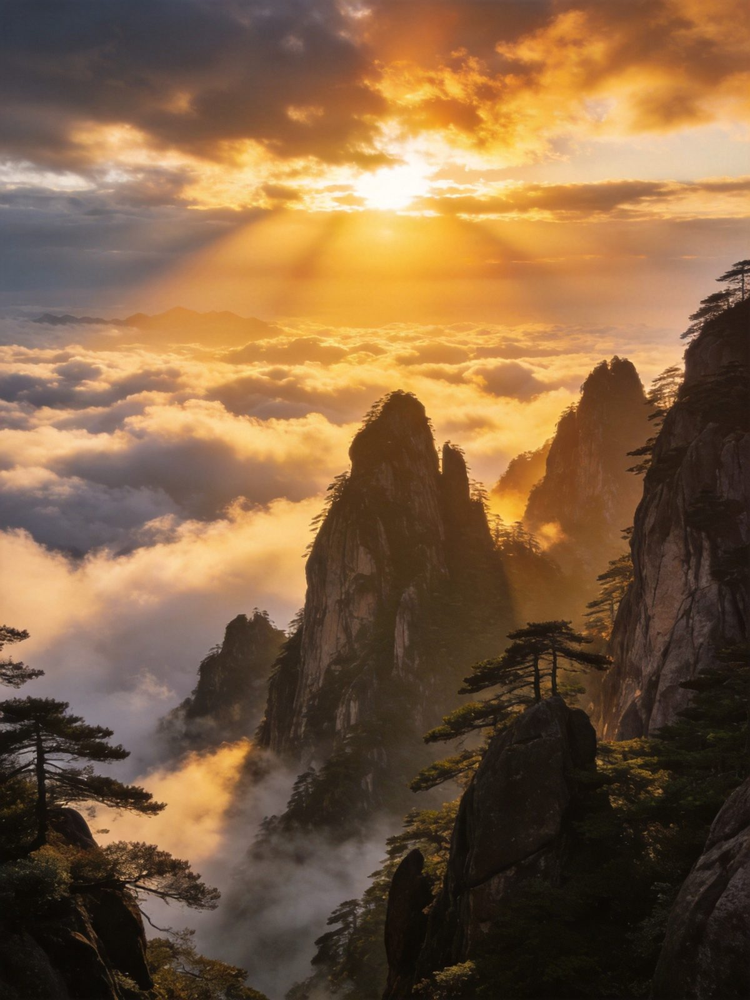
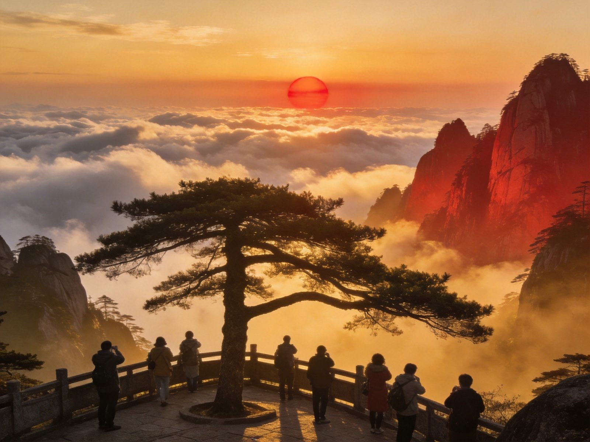
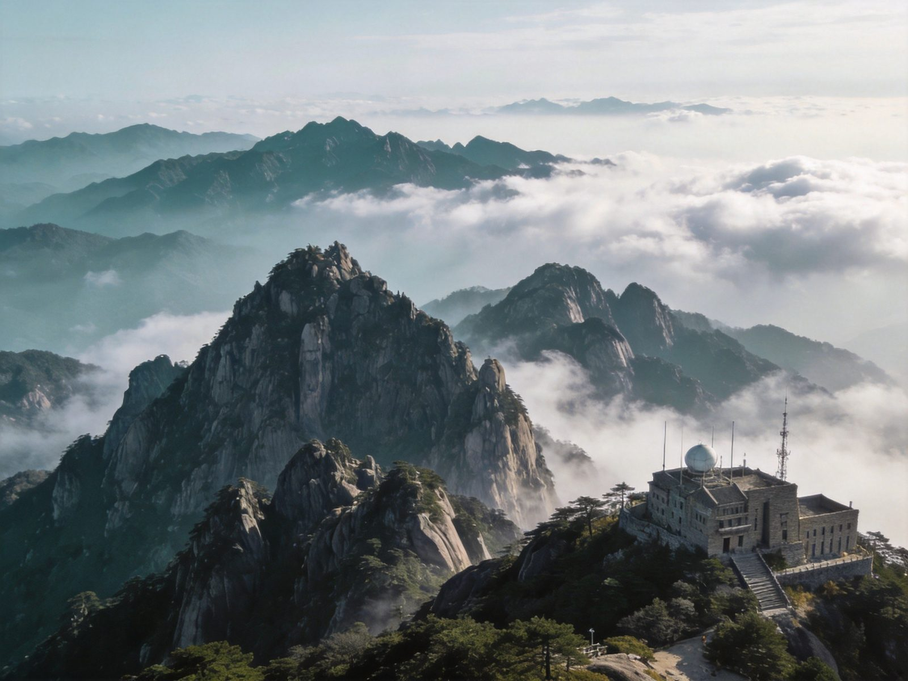

⛰️ 黄山 · MT. HUANGSHAN
黄山 · 天下第一奇山全攻略
「五岳归来不看山，黄山归来不看岳」——迎客松、光明顶、始信峰、西海大峡谷、飞来石，云海奇松怪石温泉四绝俱全，是世界自然与文化双遗产。门票 190 元三日多次入园，每日限流 3 万人必须预约，云谷/玉屏/太平三条索道+西海地轨帮你把奇山走透。高铁直达黄山北，一天或两天都能玩出彩。本文含 1 日/2 日双方案、门票预约、索道价格、交通住宿、美食预算、避坑全讲清。
📍 目的地：安徽黄山市 · 黄山风景区
👥 1–6 人自由行
⏱️ 1 日 / 2 日 双方案
💰 平旺季190 · 冬游150
⚡1 日精华 · 快充版
经典「后山上、前山下」路线：云谷索道上山，走始信峰、光明顶，玉屏索道下行顺路看迎客松，一天把黄山核心一网打尽。
👥 1–3 人适配：换乘大巴往返 38 元必购（私家车禁入），云谷上行 80 元+玉屏下行 80 元是省力经典组合。
🗺️ 行程安排
-
上午 · 后山云谷索道上山
🚌 黄山北站→汤口换乘中心（约1h）🚎 换乘大巴→云谷寺（约30min）
🚡 云谷索道（上行80元，约10min）🌲 始信峰、北海（黄山精华松石）
⚠️ 门票需提前 3–7 天预约抢购，现场无售票；首日检票后 3 天内可多次入园。
-
中午 · 光明顶 + 岩峰环线
⛰️ 光明顶（黄山第二高峰，登顶看云海）🪨 飞来石（红楼梦片头石）
💡 把干粮带山顶吃，光明顶/北海多人餐约 40–60 元；天气通透时飞来石顺光最好拍。
-
下午 · 前山玉屏索道下行 + 迎客松
🌲 莲花峰/天都峰远眺（轮休开放）🌲 迎客松（黄山名片，必打卡）
🚡 玉屏索道（下行80元）🚎 换乘大巴返回汤口
⚠️ 若天都峰轮休开放且已预约（实名预约 6:30–15:00），可把天都峰加进前山段；15:00 后徒步检票口只出不进。
🌿2 日深度 · 松弛版
第一天进山住山上酒店看日出云海，第二天补西海大峡谷自然奇观，山下再顺路逛宏村西递，把皖南一次玩透。
👥 1–3 人适配：想追日出云海务必住山上，白云宾馆/光明顶山庄等需提前很久抢订；山下宏村距汤口约 1 小时。
🗺️ 行程安排
-
DAY 1 · 后山进山 + 光明顶看日落
🚡 云谷索道上山🌲 始信峰/北海🪨 飞来石
⛰️ 光明顶等日落云海🏨 住白云宾馆/光明顶山庄
💡 山上住宿稀缺，提前 2 周以上抢；清晨是云海高发时段，相机充好电。
-
DAY 2 · 西海大峡谷 + 迎客松 + 山下宏村
🌊 清晨光明顶看日出云海⛰️ 西海大峡谷（地轨100元/徒步）
🌲 玉屏·迎客松 → 玉屏索道下行🚌 下午→宏村西递古村
⚠️ 西海大峡谷体力消耗大，可坐地轨往返保留体力；下山早可选宏村或西递任一逛半天。
⭐黄山核心景点 · 单独详览
把黄山最有辨识度的 5 个点单独拎出来说清楚——值不值得去、怎么玩、藏在哪个片区。

云海奇松 · 黄山之魂
全域
云海 · 黄山四绝之首
黄山云海一年约 200 天可见，尤其雨后天晴的清晨，云海在山谷间翻涌成海，奇松怪石在云上若隐若现，是黄山最震撼的自然奇观。迎客松、光明顶、始信峰都是绝佳观景位。
👍 必去理由：追云海住山上最值。光明顶日出是经典机位；冬季与初春云海出现概率更高。

迎客松 · 黄山名片
玉屏景区
迎客松 · 黄山第一品牌
生长于玉屏楼前崖壁上的千年奇松，一侧枝干如人臂伸出迎客，被誉为「黄山第一奇松」，也是黄山的形象标志。就长在玉屏索道出口附近，顺路即达，无需绕远。
👍 必去理由：黄山最出名的打卡位，几乎人人必拍；清晨人少、光线侧打最美。

光明顶 · 观日出制高点
北海景区
光明顶 · 黄山第二高峰观景台
海拔 1860 米，黄山第二高峰，因地势高旷、日光充足得名，是观日出、云海的最佳点之一。山顶建有光明顶山庄，可住山顶守日出；天气晴好时能远眺莲花峰、天都峰、始信峰群峰。
👍 必去理由：后山前山的天然分界点，几乎必经；住这里看日出最方便。
西海大峡谷 · 奇险秘境
西海景区
西海大峡谷 · 黄山新开辟的秘境
黄山近年最惊艳的峡谷风光区，峰壁陡峭、栈道如悬空，云雾缭绕时如入仙境。可徒步沿绝壁栈道深入，或乘西海地轨（单程 100 元）省力往返，是摄影与探险爱好者的心头好。
👍 必去理由：自然奇观最集中处，地轨+徒步组合最省力；雨后放晴出片率极高。
始信峰 · 奇松荟萃
北海景区
始信峰 · 观黄山奇松怪石最集中
「始信黄山天下奇」由此峰得名，是观黄山奇松怪石最集中的地方——接引松、黑虎松、连理松等名松汇集，峰顶俯瞰群峰如画。步行难度不大，是后山路线的高光一段。
👍 必去理由：黄山松的精华全在这，离云谷索道上站近，必走。
🚗怎么去：高铁 vs 飞机 vs 自驾
黄山交通便利，高铁直达黄山北站，机场落地屯溪，山脚汤口是进山枢纽。
黄山高铁/飞机/自驾三种交通方式对比
| 方式 | 🚄 高铁 | ✈️ 飞机 | 🚗 自驾 |
|---|
| 时长/成本 |
黄山北站→汤口客运大巴约 20 元/1h；杭州约1.5h、上海约3h、北京约5h可达 |
屯溪机场（黄山屯溪国际机场）→汤口约 1h 车程 |
沪渝/G3 京台高速至汤口，江浙沪 3–5h 可达 |
|---|
| 适合人群 |
✔ 最推荐：高铁网发达、准时省心 |
远距离直达、赶时间 |
自驾游、带娃方便、周边出发 |
|---|
| 注意 |
进山必换乘景区大巴，私家车停山下 |
班次有限，需搭配高铁上山 |
节假日汤口停车紧张，提前停车 |
|---|
| 💡 一句话建议：高铁黄山北站最方便，出站坐旅游专线大巴约 1 小时到汤口换乘中心；进山需另乘景区换乘大巴（往返 38 元），私家车禁入山门。 |
|---|
📱 预约与限流：通过「黄山旅游官方平台」微信小程序强实名分时预约，现场不设售票窗口；每日限流 3 万人、系统每日 10:00 更新放票，热门时段提前 3–7 天预约，免票半票人群同样需要预约对应票种。
🏨住宿推荐
山下住汤口是主流，追日出云海则务必住山上（稀缺需抢订）。三档价位供参考。
经济型
汤口经济民宿
约 100–260 元/晚 · 人均 50–130
离换乘中心近，很多提供行李寄存与登山包租借，适合预算型一日徒步。
中端舒适
汤口精品酒店
约 260–500 元/晚 · 人均 130–250
近游客中心、含早餐，入住舒适度更高；非节假日性价比突出。
山上观景
光明顶/白云宾馆
约 600–1500 元/晚 · 人均 300–750
黄山唯一能看日出的选择，床位与标间类型多样，必须极早抢订。
🍜黄山必吃清单
屯溪老街与汤口聚集正宗徽菜，徽州臭鳜鱼、毛豆腐是招牌。
💰预算对比（人均）
含 1–3 人出行说明；区间为保守–宽松，实际以淡旺季与选择为准。
黄山1日与2日方案人均预算对比
| 项目 | 1日精华版 | 2日深度版 |
|---|
| 大交通（江浙沪往返人均） | 约 150–400 | 约 150–500 |
|---|
| 门票（平旺季，三日入园） | 190 | 190 |
|---|
| 换乘大巴往返 | 38 | 38 |
|---|
| 索道（云谷+玉屏往返） | 约 150–160 | 约 160（+西海地轨100可选） |
|---|
| 住宿 | —（当日往返） | 1 晚 100–1500 |
|---|
| 餐饮 | 约 70–130 | 约 150–300 |
|---|
| 合计 · 人均 | 约 580–900 | 约 750–2800 |
|---|
💡 省法：冬游季（12.20–次年1.20）门票仅 150 元较平旺季省 40 元；学生/60–64 半票 95/75 元，65 岁以上免门票；只买上行索道、下行徒步可再压预算。
🧭避坑 & 实用贴士
- 必须预约：黄山现场不设售票窗口，每日限流 3 万人，务必提前 3–7 天通过「黄山旅游官方平台」实名分时预约抢票；免票半票人群同样要预约，旺季提前更久。
- 三日入园记得二次预约：门票首次检票后 3 天有效，但多次进山需在官方平台再次分时预约（每日限量），线下一律不办。
- 私家车禁入山门：换乘大巴往返 38 元必购，自驾车停汤口或游客中心周边，别硬往山口开。
- 天都峰要单独约：天都峰坡陡路险、承载有限，且多实行轮休，开放期间需实名预约（6:30–15:00），无预约不登峰。
- 15:00 后徒步「只出不进」：各登山步道门票检票口 15:00 后不再安排徒步游客检票入园，晚到只能坐索道或改期。
- 追云海住山上 & 备厚外套：山顶温差大、风大，夏季也要带外套；想拍日出云海务必住山上并提前抢房。